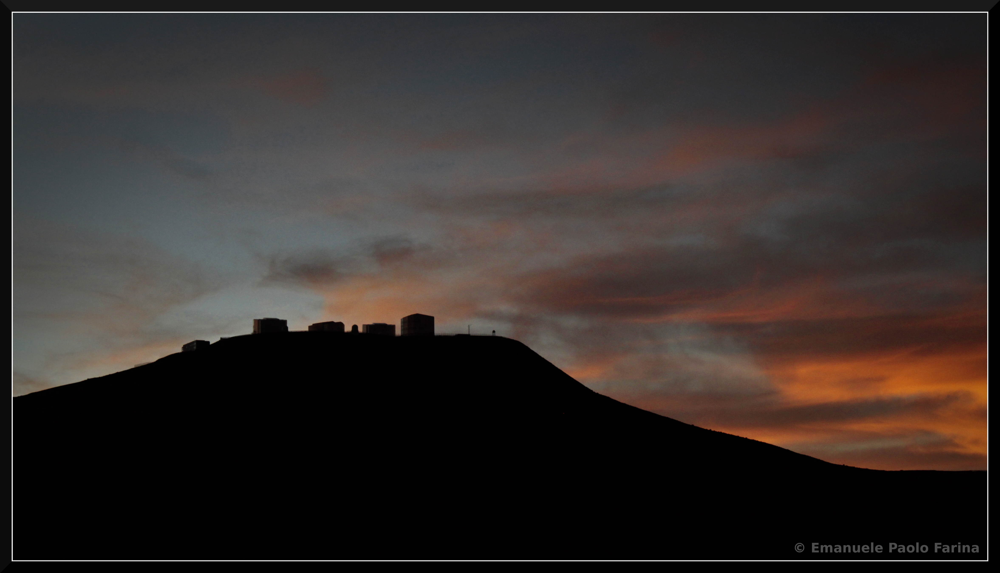
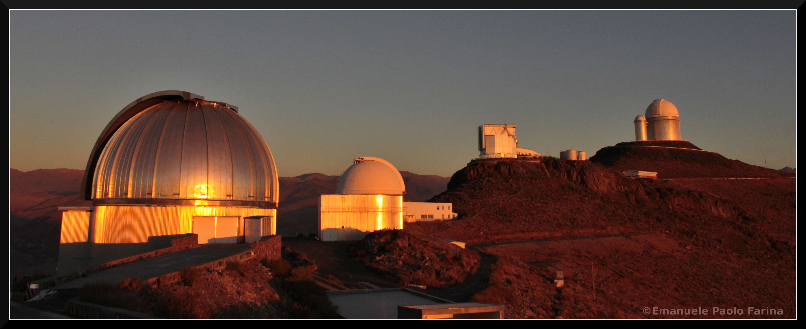

I am an observational astronomer and since January 2020 I am based at ESO as Archive Science Engineer in the Archive Science group (outsourced from Terma GmbH). I am also a visitor of the Max-Planck-Institut für Astrophysik in Garching bei München. Previously I was a postdoctoral researcher at the University of California in Santa Barbara and at the Max-Planck-Institut für Astronomie in Heidelberg. I am a member of the ENIGMA group led by Joe Hennawi and I am also part of the Pan-STARRS team quasars led by Fabian Walter. I did my PhD at the Università degli Studi dell'Insubria and my undergraduate studies at the Università degli Studi di Milano-Bicocca (with some months at the Universität Zürich). My research is mainly focused on the study of quasars and blazars from the local Universe up to the the end of the Cosmic dark ages at z≈7. In particular, I am interested on their clustering properties and on the study of their circum-galactic medium. I am first-author of 10 refereed publications and co-author of 66 additional ones. I have extensive experience in observations and am P.I. of more than 45 observing proposals. I contributed to the organization of 3 conferences and to the weekly seminar of the galaxy and cosmology department at MPIA and at UCSB.
Oct. 2020 → Today Archive Science Engineer in the Archive Science group at the European Southern Observatory (outsourced from Terma GmbH) [Garching bei München, Germany].
Jan. 2020 → Sept. 2020 Archive Science Engineer in the Archive Science and Operations groups at the European Southern Observatory (outsourced from Terma GmbH) [Garching bei München, Germany].
Jan. 2019 → Today Visitor at the Max-Planck-Institut für Astrophysik [Garching bei München, Germany].
Jan. 2019 → June 2019 Temporary Researcher at the Max-Planck-Institut für Astronomie [Heidelberg, Germany] in the group of Fabian Walter.
Dec. 2017 → Dec. 2018 Postdoctoral Fellow at the University of California, Santa Barbara [Santa Barbara, USA] in the ENIGMA group led by Joe Hennawi.
Sept. 2013 → Nov. 2017 Postdoctoral Fellow at the Max-Planck-Institut für Astronomie [Heidelberg, Germany] in the group of Fabian Walter.
Nov. 2012 → Aug. 2013 Temporary Research Fellow in Astronomy and Astrophysics at the Università degli Studi dell'Insubria [Como, Italy] in the group of Aldo Treves.
2012 — Dottorato di Ricerca (Ph.D. equivalent) in Astronomy & Astrophysics at the Università degli Studi dell'Insubria [Como, Italy] under the supervision of Aldo Treves.
Thesis Title: Physical and Projected Pairs of Quasars.
2009 — Laurea Specialistica (MSc) at the Università degli Studi di Milano-Bicocca and at the Universität Zürich under the supervision of Monica Colpi, Peppo Gavazzi, and Lea Giordano.
Thesis Title: Globular Cluster Systems in Virgo Cluster's Dwarf Galaxies.
2006 — Laurea Triennale (B.Sc.) at the Università degli Studi di Milano-Bicocca under the supervision of Monica Colpi and Bernadetta Devecchi.
Thesis Title: Gravitational encounters of BH binaries in globular cluster.
Oct. 2020 — 2020 EIROforum Topical Workshop on Big data [Leiden, Netherlands].
Mining the Southern Sky via the ESO Archive: Data--streams, cross matching, and forward look
Jul. 2020 — EAS 2020 [Leiden, Netherlands].
Cross validating new surveys with 40 years ESO archival spectra
Jan. 2020 — IfPU Colloquia [Trieste, Italy].
The circum-galactic medium of massive galaxies from dawn to noon
Jan. 2020 — FAME at INAF [Bologna, Italy].
Ly-Alpha halos around high-z quasars
Dec. 2019 — ESO AGN club [Garching bei München, Germany].
The circum-galactic medium of massive galaxies from dawn to noon
Dec. 2019 — Galaxy coffee at MPIA [Heidelberg, Germany].
Once upon a time in a quasar far, far away... A tale from your favourite MUSE
Oct. 2019 — CGM Berlin 2019 [Berlin, Germany].
From Cosmic Dawn to Noon: (non-)Evolution of the CGM in the first 3 Gyr of the Universe.
Sep. 2019 — KIAA Forum on Gas in Galaxies 2019 [Beijing, People's Republic of China].
The REQUIEM survey: a statistical study of the quasars CGM at the Cosmic Dawn.
Jun. 2019 — EWASS 2019 [Lyon, France].
The REQUIEM survey: a statistical study of the quasars CGM at the Cosmic Dwan. Poster presentation.
Jun. 2019 — Universitäts-Sternwarte München Colloquium [München, Germany].
Pushing MUSE at its edge: Probing Quasars Circum-galactic Medium at the Cosmic Dawn
May 2019 — MPE OPINAS seminar [Garching bei München, Germany].
Pushing MUSE at its edge: Probing Quasars Circum-galactic Medium at the Cosmic Dawn
Jan. 2019 — ESO AGN club [Garching bei München, Germany].
The First Quasars and their surroundings.. A tale from your favorite MUSE.
Mar. 2018 — New York University Lunch Talk [Abu Dhabi, United Arab Emirates].
Feeding primordial monsters: Guidelines on how to grow a supermassive black hole in the young Universe.
Oct. 2017 — ESO AGN club [Garching bei München, Germany].
The birth of the giants: Where do the first quasars form?
Oct. 2017 — Università degli Studi di Milano Bicocca [Milano, Italy].
The birth of the giants: Where do the first quasars form?
Sep. 2017 — Cosmic Mergers: from Massive Black Holes to Massive Clusters - Invited [Birmingham, UK].
The birth of the giants: Where do the first quasars form?
Jul. 2016 — ITA "blackboard" Colloquium [Heidelberg, Germany].
Chasing Lyα Haloes at z>6
Jun. 2016 — Illuminating the Dark Ages: Quasars and Galaxies in the Reionization Epoch [Heidelberg, Germany].
Chasing Lyα Haloes at z>6
Feb. 2016 — IMPS Winter Writing Workshop [Esalen Institute, US].
Hunting for Lyα Haloes at z>5.5
Sep. 2015 — Università degli Studi di Milano Bicocca [Milano, Italy].
Exploring the high-z Universe with Pan-STARRS1 or: How I Learned to Stop Worrying and Love Quasars
Jul. 2015 — ESO thirty minute talk [Santiago, Chile].
Exploring the high-z Universe with Pan-STARRS1 or: How I Learned to Stop Worrying and Love Quasars
Jul. 2015 — Seminarios Astrofísicos [Valparaíso, Chile].
Exploring the high-z Universe with Pan-STARRS1 or: How I Learned to Stop Worrying and Love Quasars
Jun. 2014 — Science Results from Pan-STARRS1 [Baltimore, US].
Towards a Complete Sample of z~6 Quasars: New Insights from Pan-STARRS1.
Jun. 2014 — Intergalactic Matters [Heidelberg, Germany].
The MgII absorbing Circum-Galactic Medium of quasars.
Jun. 2013 — Tuorla Observatory Seminar Series [Turku, Finland].
Two is better than one: unveiling the environment of quasars with pairs and triplets.
Jun. 2013 — The Physical Link Between Galaxies and their Halos [Garching, Germany].
The Circum-Galactic Medium of Quasars. Poster presentation.
May 2013 — OATS-UNI/TS Seminar - Invited [Trieste, Italy].
Two is better than one: unveiling the environment of quasars with pairs and triplets.
Apr. 2013 — Astrolunch at Astron [Dwingeloo, Netherlands].
Beyond the pair (discovery of a new quasar triplet).
Sep. 2012 — AGN10 national meeting [Roma, Italy].
On the cool gas halos of quasars.
Jun. 2012 — IAC talk [La Laguna, Spain].
The optical variability of the MAGIC blazar PKS 1222+216.
Apr. 2012 — Interacting Galaxies and Binary Quasars: a cosmic rendezvous [Trieste, Italy].
Exploring the cold gas halo of QSOs.
Nov. 2011 — Galaxy coffee at MPIA [Heidelberg, Germany].
Optical line variability: the case of PKS 1222+216.
Oct. 2011 — ADAE 2011 [Palermo, Italy].
Optical line variability: the case of PKS 1222+216.
May 2010 — AGN9 national meeting [Ferrara, Italy].
Close-by quasar pairs from the SDSS. Poster presentation.
I have over 120 nights of experience in optical/infrared observations at various facilities. This includes 35 nights at >8m-class, and 18 nights at 4m-class telescopes. Additionally, I observed for one month with the MAGIC Cherenkov telescopes, making myself familiar with observations in the high energy domain.

Nov. 2018 — 1 night with KECK-II [Ø10.0m, Mauna Kea, Hawaii - US].
NIR spectroscopy of high-z quasars
Nov. 2018 — 1.5 nights with KECK-I [Ø10.0m, Mauna Kea, Hawaii - US].
High resolution echelle spectroscopy of high-z quasars
Jun. 2018 — 1.5 nights with KECK-II [Ø10.0m, Mauna Kea, Hawaii - US].
NIR spectroscopy of high-z quasars
Oct. 2018 — 1 night with KECK-II [Ø10.0m, Mauna Kea, Hawaii - US].
NIR spectroscopy of high-z quasars
Apr. 2018 — 3 nights with KECK-II [Ø10.0m, Mauna Kea, Hawaii - US].
Optical spectroscopy of high-z quasars
Jan. 2017 — 1 night with the Shane 3m-telescope [Ø3.0m, Mount Hamilton, California - US].
Broad band imaging of candidate quasars at 5.5<z<7.5
Oct. 2017 — 6 nights with LBT [2xØ8.4m, Mount Graham, Arizona - US].
Service observations for the semester 2017B
Sep. 2017 — 2 nights with KECK-II [Ø10.0m, Mauna Kea, Hawaii - US].
Optical spectroscopy of high-z quasars
Jun. 2017 — 1 night with ESO/VLT [Ø8.2m, Cerro Paranal, Chile].
Integral field unit spectroscopy of high-z quasars
Apr. 2017 — 6 nights with LBT [2xØ8.4m, Mount Graham, Arizona - US].
Service observations for the semester 2017A
Feb. 2017 — 2 nights with KECK-I [Ø10.0m, Mauna Kea, Hawaii - US].
High resolution echelle spectroscopy of high-z quasars
Dec. 2016 — 16 nights with 2.2m-telescope [Ø2.2m, La Silla, Chile].
Broad band imaging of candidate quasars at 5.5<z<7.5 (and service observations)
Nov. 2016 — 7 nights with LBT [2xØ8.4m, Mount Graham, Arizona - US].
Service observations for the semester 2016B
Jun. 2016 — 6 nights with LBT [2xØ8.4m, Mount Graham, Arizona - US].
Service observations for the semester 2016A
May 2016 — 18 nights with 2.2m-telescope [Ø2.2m, La Silla, Chile].
Broad band imaging of candidate quasars at 5.5<z<7.5 (and service observations)
Mar. 2016 — 6 nights with WHT [Ø4.2m, Roque de Los Muchachos, Spain].
Optical spectroscopy of selected quasars
Nov. 2015 — 5 nights with 2.2m-telescope [Ø2.2m, La Silla, Chile].
Broad band imaging of candidate quasars at 5.5<z<7.5
Aug. 2015 — 6 nights with 2.2m-telescope [Ø2.2m, La Silla, Chile].
Broad band imaging of candidate quasars at 5.5<z<7.5
Jul. 2015 — 5 nights with ESO/NTT [Ø3.58m, La Silla, Chile].
Broad band imaging of candidate quasars at 5.5<z<7.5
Jun. 2015 — 6 nights with LBT [2xØ8.4m, Mount Graham, Arizona - US].
Service observations for the semester 2015A
Dec. 2014 — 8 nights with 2.2m-telescope [Ø2.2m, La Silla, Chile].
Broad band imaging of candidate quasars at 5.5<z<7.5
Sept. 2014 — 9 nights with 2.2m-telescope [Ø2.2m, La Silla, Chile].
Broad band imaging of candidate quasars at 5.5<z<7.5
Sept. 2013 — 4 nights with ESO/NTT [Ø3.58m, La Silla, Chile].
Broad band imaging of candidate quasars at 5.5<z<7.5
May 2012 — 1 month with MAGIC [Ø2×17m, Roque de Los Muchachos, Spain].
Operator at the MAGIC Cherenkov Telescopes during the Period 116.
Feb. 2011 — 2 nights with ESO/VLT [Ø8.2m, Cerro Paranal, Chile].
Optical spectra of projected quasar pairs.
Jan. 2011 — 2 nights with TNG [Ø3.58m, Roque de Los Muchachos, Spain].
Spectra and optical imaging of selected quasars.
Apr. 2008 — 10 nights with the 2.1m telescope of OAN [Ø2.1m, Sierra San Pedro Mártir, Mexico].
Optical follow-up of ALFALFA sources.
Feb. 2007 — 5 nights with the Loiano Cassini 1.5m telescope [Ø1.5m, Loiano, Italy].
Spectra and optical imaging of selected Virgo galaxies.
I am the P.I. of 45 observing proposals. In particular, I was awarded >450 hours of optical/NIR spectroscopy to probe the properties of the population of z>6 quasars recently discovered in the Pan-STARRS1 by the group led by Dr. F. Walter at MPIA (106 hours at the LBT, 354 hours at the ESO-VLT, and 6 orbits at the HST). I also started a programme aimed at exploring the properties of multiple quasar systems at millimeter wavelengths. This project obtained 3.7 hours of ALMA and 25 hours of IRAM-NOEMA.
2020 — ESO/VLT: A
detailed Characterization of the
Circum-Galactic Medium of the first
QSOs.
24h of IFU spectroscopy with KMOS.
Co-I: Arrigoni-Battaia, F.; Bañados, E.; Costa, T.; Decarli R.; Fan, X.; Hennawi, J.; et al.
2020 — ESO/VLT: The
birth of a giant: Probing pristine gas
accretion on the highest redshift QSO known.
20h of IFU spectroscopy with KMOS.
Co-I: Arrigoni-Battaia, F.; Bañados, E.; Drake, A.; Fan, X.; Gadotti, D.; Hennawi, J.; et al.
2019 — ESO/VLT: The birth of a giant: Probing pristine gas accretion on two z∼7.5 QSOs.
36h of IFU spectroscopy with KMOS.
Co-I: Arrigoni-Battaia, F.; Bañados, E.; Drake, A.; Fan, X.; Gadotti, D.; Hennawi, J.; et al.
2019 — ESO/VLT: The Ecosystem of the First QSOs - A MUSE Snapshot Survey.
19h of IFU spectroscopy with MUSE.
Co-I: Arrigoni-Battaia, F.; Bañados, E.; Becker, G.; Bosman, S.; Cristiani, S.; D'Odorico, V.; et al.
2019 — ESO/VLT: The Ecosystem of the First QSOs - A MUSE Snapshot Survey.
55h of IFU spectroscopy with MUSE.
Co-I: Arrigoni-Battaia, F.; Bañados, E.; Bosman, S.; Cristiani, S.; D'Odorico, V.; Decarli, R.; et al.
2019 — ESO/VLT: The pathways of Massive Galaxy Formation: the Assembly of CGM in the first 2 Gyrs of the Universe.
19h of IFU spectroscopy with MUSE.
Co-I: Arrigoni-Battaia, F.; Bañados, E.; Decarli, R.; Drake, A.; Hennawi, J.; Gutcke, T.; et al.
2018 — ESO/VLT: The Ecosystem of the First QSOs - A MUSE Snapshot Survey.
12h of IFU spectroscopy with MUSE.
Co-I: Walter, F.; Venemans, B.; Bañados, E.; Decarli, R.; Mazzucchelli, C.; Arrigoni-Battaia , F.; et al.
2018 — ESO/VLT: The pathways of Massive Galaxy Formation: the Assembly of CGM in the first 2 Gyrs of the Universe.
29h of IFU spectroscopy with MUSE.
Co-I: Arrigoni-Battaia, F.; Bañados, E.; Decarli, R.; Drake, A.; Hennawi, J.; Gutcke, T.; et al.
2018 — ESO/VLT: The Ecosystem of the First QSOs - A MUSE Snapshot Survey.
12h of IFU spectroscopy with MUSE.
Co-I: Walter, F.; Venemans, B.; Bañados, E.; Decarli, R.; Mazzucchelli, C.; Arrigoni-Battaia , F.; et al.
2018 — ALMA: Unveiling Absorption-Selected Galaxies with ALMA: an Insight View of the Baryon Cycle at z~2
6.8h with ALMA band-4.
Co-I: Crighton, N.; Walter, F.; Decarli, R.; Hennawi, J.; Murphy, M.; Neeleman, M.
2018 — ESO/VLT: The pathways of Massive Galaxy Formation: the Assembly of CGM in the first 2 Gyrs of the Universe.
29h of IFU spectroscopy with MUSE.
Co-I: Arrigoni-Battaia, F.; Bañados, E.; Decarli, R.; Drake, A.; Hennawi, J.; Gutcke, T.; et al.
2017 — ESO/VLT: The Ecosystem of the First QSOs - A MUSE Snapshot Survey.
23h of IFU spectroscopy with MUSE.
Co-I: Walter, F.; Venemans, B.; Bañados, E.; Decarli, R.; Mazzucchelli, C.; Arrigoni-Battaia , F.; et al.
2017 — LBT: The most distant quasars: probers of the early Universe.
10h of optical spectroscopy with MODS.
Co-I: Venemans, B.; Walter, F.; Decarli, R.; Mazzucchelli, C.; Bañados, E.; Rix, H-W.; et al.
2017 — IRAM/NOEMA: Triplets of Quasars: Exploring the Formation of a Cluster with NOEMA.
8.2h with NOEMA band-1.
Co-I: Walter, F.; Decarli, R.; Fumagalli, M.
2017 — LBT: The most distant quasars: probers of the early Universe.
10h of optical spectroscopy with MODS.
Co-I: Venemans, B.; Walter, F.; Decarli, R.; Mazzucchelli, C.; Bañados, E.; Rix, H-W.; et al.
2017 — LBT: Probing the environment of a z≈6 QSO
10h of optical imaging and spectroscopy with MODS.
Co-I: Venemans, B.; Walter, F.; Decarli, R.; Mazzucchelli, C.; Bañados, E.; Rix, H-W.; et al.
2016 — ESO/VLT: The build-up of QSOs at the cosmic dawn: a MUSE and ALMA synergy.
1n of IFU spectroscopy with MUSE.
Co-I: Decarli, R.; Walter, F.; Venemans, B.; Mazzucchelli, C.; Bañados, E.
2016 — LBT: Exploring the Formation of Cosmic Structures with Quasar Triplets.
3h of optical spectroscopy with MODS.
Co-I: Decarli, R.; Arrigoni-Battaia , F.; Bañados, E.; Fumagalli, M.; Montuori, C.
2016 — LBT: The most distant quasars: probers of the early Universe.
10h of optical spectroscopy with MODS.
Co-I: Venemans, B.; Walter, F.; Decarli, R.; Mazzucchelli, C.; Bañados, E.; Rix, H-W.; et al.
2016 — IRAM/NOEMA: Triplets of Quasars: Exploring the Formation of a Cluster with NOEMA.
8.2h with NOEMA band-1.
Co-I: Walter, F.; Decarli, R.; Fumagalli, M.
2016 — ESO/VLT: The Properties of the First QSOs: new Insights from X-SHOOTER and ALMA.
40h of NIR and optical spectroscopy with X-SHOOTER.
Co-I: Walter, F.; Hennawi, J.; Venemans, B.; Decarli, R.; Davies, F.; Bañados, E.; et al.
2016 — LBT: Exploring the Formation of Cosmic Structures with Quasar Triplets.
3h of optical spectroscopy with MODS.
Co-I: Decarli, R.; Arrigoni-Battaia , F.; Bañados, E.; Fumagalli, M.; Montuori, C.
2015 — IRAM/NOEMA: Triplets of Quasars: Exploring the Formation of a Cluster with NOEMA.
17h with NOEMA band-1.
Co-I: Walter, F.; Decarli, R.; Fumagalli, M.
2015 — ESO/VLT: The Properties of the First QSOs: new Insights from X-SHOOTER and ALMA.
40h of NIR and optical spectroscopy with X-SHOOTER.
Co-I: Walter, F.; Hennawi, J.; Venemans, B.; Decarli, R.; Davies, F.; Bañados, E.; et al.
2015 — 2.2m-telescope: On the environment of quasar triplets.
6h of NIR and optical broad band imaging with GROND.
Co-I: Decarli, R.; Mazzucchelli, C.; Fumagalli, M.; Montuori, C.
2015 — LBT: The most distant quasars: probers of the early Universe.
10h of optical spectroscopy with MODS.
Co-I: Venemans, B.; Walter, F.; Decarli, R.; Mazzucchelli, C.; Bañados, E.; Rix, H-W.; et al.
2015 — CAHA 3.5m telescope: Exploring the Formation of Cosmic Structures with Quasar Triplets.
1n of optical IFU with PMAS.
Co-I: Decarli, R.; Arrigoni-Battaia, F.; Stinson, G.; Bañados, E.; Sánchez, S. F.; Fumagalli, M.; et al.
2015 — ALMA: Triplets of Quasars: Exploring the Origin of Clusters with ALMA.
3.7h with ALMA band-3.
Co-I: Walter, F.; Decarli, R.; Hennawi, J.; Fumagalli, M.; Arrigoni Battaia, F.; Lusso, E.; et al.
2015 — LBT: The most distant quasars: probers of the early Universe.
10h of optical spectroscopy with MODS.
Co-I: Venemans, B.; Walter, F.; Bañados, E.; Decarli, R.; Mazzucchelli, C.; Rix, H-W.; et al.
2014 — LBT: The most distant quasars: probers of the early Universe.
10h of optical spectroscopy with MODS.
Co-I: Venemans, B.; Walter, F.; Bañados, E.; Decarli, R.; Mazzucchelli, C.; Rix, H-W.; et al.
2014 — LBT: Characterization of two new z˜6 quasars.
4h of NIR spectroscopy with LUCI.
Co-I: Venemans, B.; Walter, F.; Bañados, E.; Decarli, R.; Mazzucchelli, C.; Rix, H-W.; et al.
2014 — CAHA 3.5m telescope: Exploring the Formation of Cosmic Structures with Quasar Triplets.
1n of optical IFU with PMAS.
Co-I: Decarli, R.; Arrigoni-Battaia, F.; Stinson, G.; Bañados, E.; Sánchez, S. F.; Fumagalli, M.; et al.
2014 — 2.2m-telescope: On the environment of quasar triplets.
6h of NIR and optical broad band imaging with GROND.
Co-I: Decarli, R.; Fumagalli, M.; Montuori, C.; Mazzucchelli, C.
2014 — HST: The Lyman Alpha Extended Halo of a Quasar at z>6.
6 orbits of grism spectroscopy with WFC3.
Co-I: Walter, F.; Weiner, B.; Decarli, R.; Venemans, B.; Bañados, E.
2014 — LBT: The most distant quasars: probers of the early Universe.
10h of optical spectroscopy with MODS.
Co-I: Venemans, B.; Walter, F.; Bañados, E.; Decarli, R.; Rix, H-W.; Fan, X.; et al.
2014 — LBT: Characterization of three new z˜6 quasars.
6h of NIR spectroscopy with LUCI.
Co-I: Venemans, B.; Walter, F.; Bañados, E.; Decarli, R.; Rix, H-W.; Fan, X.; et al.
2014 — CAHA 2.2m telescope: Exploring the hyper-variability of quasars.
4n of optical spectroscopy with CAFOS.
Co-I: Morganson, E.; Walter, F.; Hennawi, J.; Bañados, E.; Worseck, G.; Decarli, R.; et al.
2014 — LBT: Characterization of three new z˜6 quasars.
6h of NIR spectroscopy with LUCI.
Co-I: Venemans, B.; Walter, F.; Bañados, E.; Decarli, R.; Rix, H-W.; Fan, X.; et al.
2014 — CAHA 2.2m telescope: Probing the galactic environment of close quasar pairs.
4n of optical imaging with BUSCA.
Co-I: Decarli, R.; Sandrinelli, A.; Treves, A.; Falomo, R.
2013 — NOT: Probing HESS J1943+213: a possible BL Lac shining through the Galaxy.
2h of broad band H-band imaging with NOTCam
Co-I: Kotilainen, J.; Cheung, C.; Lindfors, E.
2013 — NOT: Co-I: The imaging redshift of the MAGIC BL Lac H1722+119
1h of broad band H-band imaging with NOTCam
Co-I: Terzić, T.; Kotilainen, J.; Landoni, M.
2013 — ESO/VLT: Unveiling the connection between MgII absorbers and QSO environment.
6.5h of NIR imaging with HAWK-I.
Co-I: Falomo, R.; Decarli, R.; Treves, A., Scarpa, R; Kotilainen, J.
2013 — ESO/VLT: Unveiling the connection between MgII absorbers and QSO environment.
15.0h of optical imaging with FORS2 + 17.5h of NIR imaging with HAWK-I.
Co-I: Falomo, R.; Decarli, R.; Treves, A., Scarpa, R; Kotilainen, J.
2012 — CAHA 3.5m telescope: Beyond the pair: seeking for physical triplets of quasars.
1n of optical spectroscopy with TWIN.
Co-I: Montuori, C.; Decarli, R.; Fumagalli, M.
2011 — ESO/VLT: Quasars probing quasars: exploring the mechanisms of quasar ignition.
18.5h of optical spectroscopy with FORS2.
Co-I: Decarli, R.; Falomo, R.; Treves, A.; Kotilainen, J.
2010 — CAHA 2.2m telescope: Probing the galactic environment of close quasar pairs.
1.5n of optical imaging with BUSCA.
Co-I: Decarli, R.; Falomo, R.; Treves, A.
2010 — Asiago-EKAR 1.82m telescope: New SDSS selected QSO pairs.
15.5h of optical spectroscopy and imaging with AFOSC.
Co-I: Falomo, R.; Treves, A.; Decarli, R.
2007 → 2008 — Tutor for the course Physics 1 held by Antonino Pullia at the Università degli Studi di Milano-Bicocca [Milano, Italy].
2008 → 2009 — EXternal TRAining fellowship. Awarded to promising Master Degree Thesis by the Università degli Studi di Milano-Bicocca and by Fondazione Cariplo.
Sep. 2019 — Multiple-phase ISM: probing the activities and power engines from local to distant universe [Beijing, People's Republic of China].
Scientific Organizer.
Sep. 2018 Sep. → Dec. 2018 — UCSB Astro-Lunch [Santa Barbara, USA].
Member of the SOC.
Jun. 2016 — Illuminating the Dark Ages [Heidelberg, Germany].
Member of the LOC.
#DarkAgesHD
May 2016 — MPIA Galaxies and Cosmology Group Retreat [Heidelberg, Germany].
Scientific and Logistic Organizer together with Jonathan.
#GalaxiesAndCosmology2016
Mar. 2015 → Oct. 2017 — MPIA Galaxy Coffee [Heidelberg, Germany].
Organizer.
Jun. 2014 —Intergalactic Matters 2014 [Heidelberg, Germany].
Member of the LOC.
Jun. 2020 — Contribution to Super-QUARK on the Star Dance Around Supermassive Black Hole [Garching bei München, Germany].
Interview for the Italian broadcast RAI.
Jun. 2018 — How far are the stars? [Santa Barbara, USA].
One lesson to introduce astronomy to 2-5 years old children.
Nov. 2017 — Meet an astronomer [Bresso, Italy].
Four lessons to introduce astronomy to kids.
Sep. 2016 — Heidelberg Laureate Forum visit MPIA/HdA [Heidelberg, Germany].
Conversation on Astronomy and Astrophysics for young researchers.
Jan. 2013 — Liceo Paolo Giovio [Como, Italy].
Lectures on Astronomy and Astrophysics for high school students.
Jun. 2011 — Lesmo Amica: Serata informativa per i Referendum [Lesmo, Italy].
Public lectures on radioactivity in nature.
Mar. 2011 — Emmeci2 La relatività tra fisica e filosofia [Palazzolo, Italy].
Public lectures on special relativity.